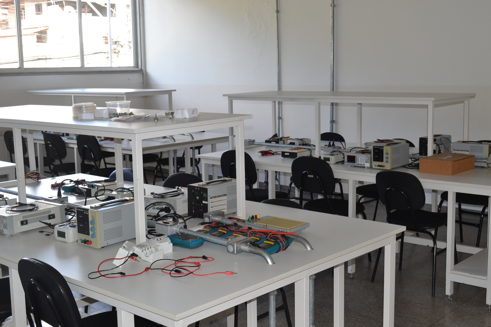
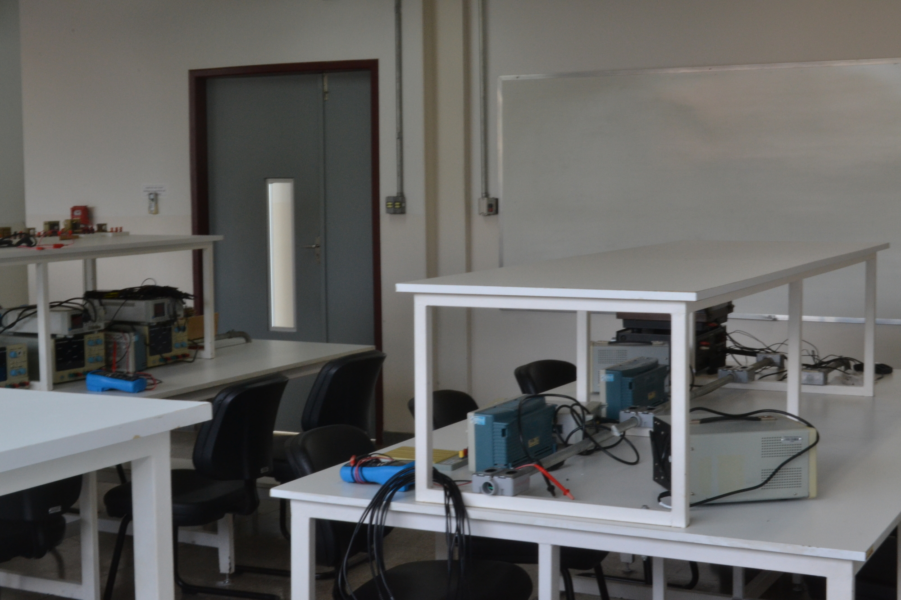
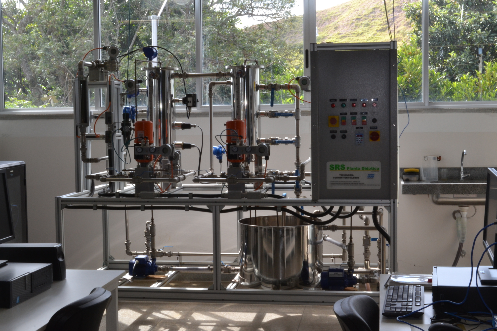
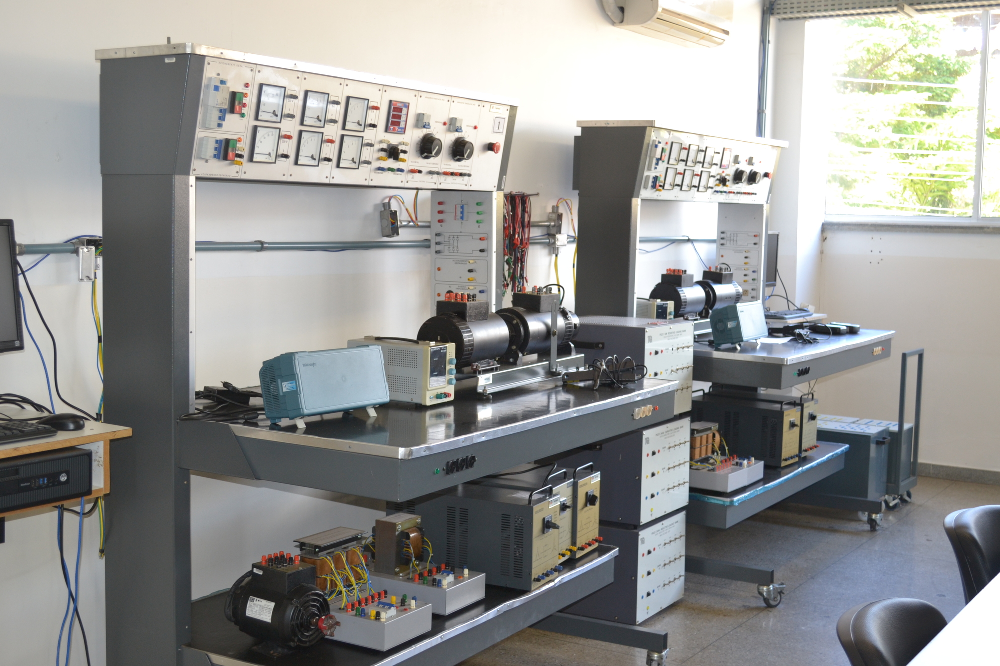
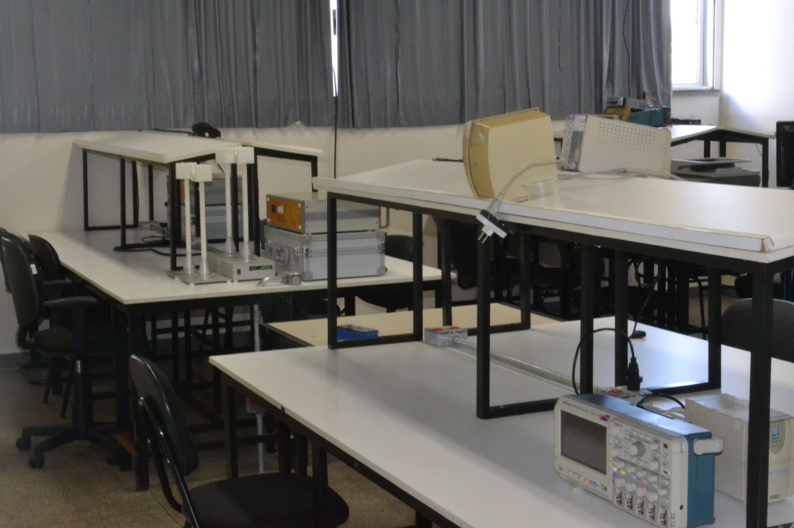
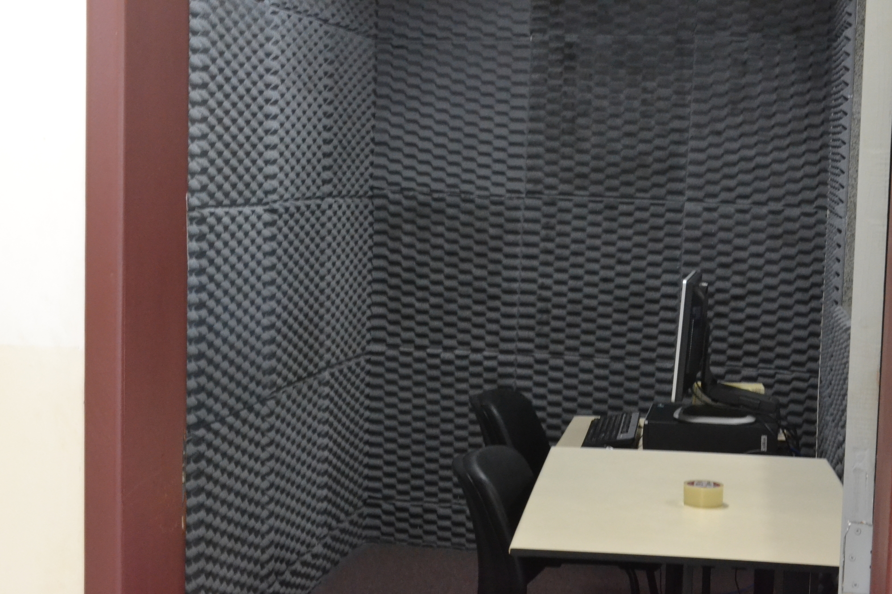
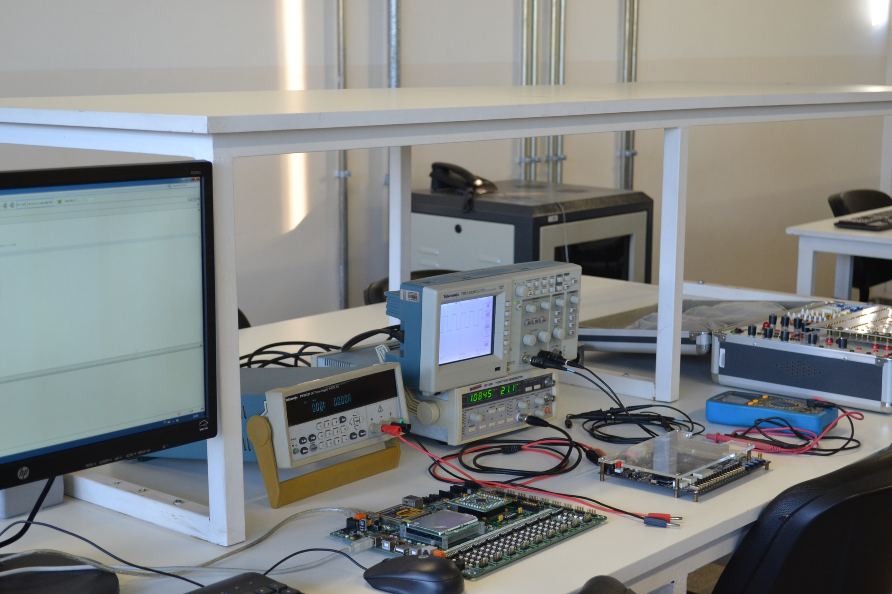

Laboratórios(disciplinas obrigatórias e eletivas por semestres) [Wayback: verificar captura]
1. Laboratório de circuitos elétricos
Os alunos aprendem a manusear equipamentos e ferramentas de corrente contínua (CC), primeiramente, e de corrente alternada (CA), na sequência, no Laboratório de Circuitos Elétricos. No que se refere aos circuitos de corrente contínua, são aplicadas as leis gerais, que também são similarmente em termos de circuitos de corrente alternada; tais como transformação estrela triângulo e vice-versa, teorema da transposição e leis de Kirchhoff, dentre outras. Ao final, dever-se-á ser capaz de analisar os circuitos em CC e CA de acordo com os seguintes tópicos: excitação senoidal e fasores; análise em regime permanente; potência em regime permanente; circuitos trifásicos; frequência complexa e funções de rede; resposta em frequência; circuitos acoplados magneticamente e filtros Passivos.

2. Laboratório de eletrônica analógica
O laboratório de eletrônica analógica atende diversas disciplinas práticas do curso de engenharia elétrica e engenharia de computação. A sua principal missão é que os alunos destes cursos possam realizar ensaios e práticas das disciplinas que tenham em sua ementa unidades relacionadas a eletrônica e eletrotécnica. Para isso, o laboratório conta com diferentes recursos e equipamentos como fontes de alimentação ajustável, osciloscópios, protoboard, multímetros, computadores, diversos componentes eletrônicos, etc. O laboratório possui um técnico que auxilia na execução das aulas práticas e é responsável pela organização do espaço e equipamentos. Além de auxiliar e acompanhar os alunos que necessitem usar o laboratório fora dos horários das aulas. Além do técnico, o laboratório possui um coordenador responsável.

3. Laboratório de controle e automação
O Laboratório de Controle e Automação foi projetado para lecionar o conteúdo prático das disciplinas do curso de Engenharia Elétrica relacionadas à área de Sistemas de Controle. O Laboratório de Controle e Automação é dividido em três salas, H204, H205 e H206. A sala H204 pode ser utilizada para montagens de experimentos, de kits móveis e para a realização de experimentos utilizando o braço robótico (Arm Robot Trainner ARM-7220-4). Na sala H205 podem ser realizados experimentos utilizando plataformas de simulação de uma linha de produção (Planta Automation trainner ED-4031). Na sala H206 podem ser realizados experimentos utilizando plataformas de simulações de automatização de um ambiente industrial (PLC Exsto XC 103 e Exsto XC 201), assim como também a Planta Didática da Smar com Tecnologia Foundation Fieldbus.

4. Laboratório de sistemas elétricos industriais
Laboratório destinado às práticas das máquinas elétricas estacionárias ( transformadores ) e as máquinas elétricas girantes ( motores e geradores ). Também se destina a este laboratório as práticas associadas às interfaces eletrônicas de potências aplicadas aos sistemas elétricos de potência ( SEP ) como retificadores, inversores e compensadores estáticos. As medidas elétricas em corrente alternada, trifásicas bem como medidas de potência e correção do fator de potência e práticas para a Qualidade de Energia ( QEE) também são experimentadas neste espaço.

5. Laboratório de radiofrequência
O Laboratório de Telecomunicações - Radiofrequências é destinado ao desenvolvimento de atividades práticas das seguintes disciplinas da área de Telecomunicações lecionadas para os cursos de Engenharia Elétrica e Engenharia de Computação: Fundamentos de Comunicações, Propagação de Ondas de Rádio e Antenas. O laboratório é equipado com geradores de sinais AM/FM, analisadores de espectro, multímetros de alta precisão, kit didático de antenas e conta ainda com um gateway para comunicação LoRa. O laboratório também é utilizado para o desenvolvimento de projetos de final de curso (TCC), atividades de extensão relacionadas à área de Telecomunicações e Projeto Integrador.

6. Laboratório de processamento de sinais
O Laboratório de Telecomunicações – Processamento Digital de Sinais é direcionado principalmente ao desenvolvimento de atividades de ensino dos alunos de graduação dos cursos de Engenharia Elétrica e Engenharia de Computação durante a realização das aulas práticas das disciplinas de Sinais e Sistemas, Fundamentos de Comunicação, Processamento Digital de Sinais e das eletivas da ênfase de telecomunicações do curso. Também é utilizado para desenvolvimento de trabalho final de curso, iniciação científica, pesquisas e atividades de extensão nas áreas de telecomunicações, processamento de sinais e aprendizado de máquina.
Trata-se de um espaço equipado com computadores, osciloscópios, geradores de função, placas de aquisição de dados da National Instruments, um ambiente de câmara acústica e kits para aquisição de sinais de fala, vídeo, biométricos, entre outros.

7. Laboratório de eletrônica digital
Neste laboratório são desenvolvidas as aulas práticas das disciplinasda área de eletrônica digital, que fazem parte da grade curricular dos alunos de engenharia elétrica e de computação.O laboratório também é utilizado para o desenvolvimento de projetos de iniciação científica, extensão e trabalhos de conclusão de curso.
Atualmente, são ministradas neste laboratório as seguintes disciplinas obrigatórias:
- CEA341 – Princípios de Eletrônica Digital;
- CEA580 - Microprocessadores e Microcontroladores;
- CEA147 - Eletrônica Embarcada.
Além disso, também podem ser ministradas as seguintes disciplinas eletivas:
- Sistemas embarcados aplicados a sistemas de controle;
- Automação em tempo real;
- Interfaceamento de sistemas;
- Automação residencial.
Durante as aulas práticas, os estudantes têm à disposição os seguintes equipamentos:
- Computadores com acesso à internet;
- Fontes de alimentação ajustáveis;
- Geradores de Sinais;
- Multímetros;
- Osciloscópios Digitais;
- Kits de desenvolvimento com circuitos lógicos, microcontroladores e FPGA’s;
- Protoboards e componentes eletrônicos diversos.
O laboratório também conta com o suporte de um técnico que,juntamente com os professores responsáveis pelas disciplinas, acompanha os estudantes durante as aulas práticas e os auxilia no desenvolvimento de projetos de pesquisa e extensão.
